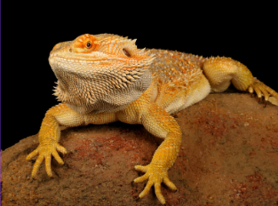
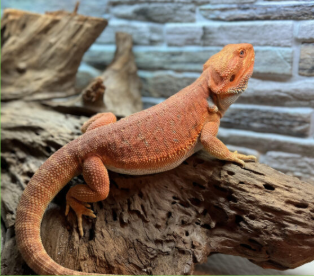

- odżywiają się głównie roślinami np. rukola itd., żywia się też robakami jak karaluchy, drewnojady lub świercze
- w warunkach domowych potrzebują duże terrarium, najlepiej by było jakby terrarium było przybliżone do terenów pustynnych, także potrzebują lampy grzewczej lub maty grzewczej
- żyją około 16 lat
- głównie zamieszkuje suche, trawiaste i skaliste tereny Australii